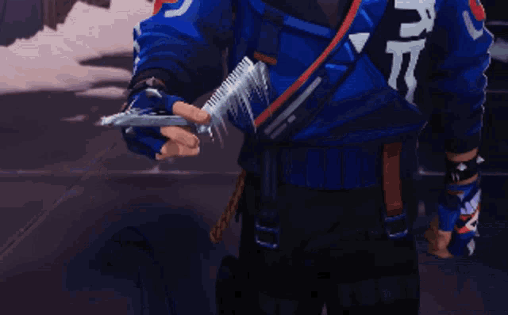

Why do I love Anime?
Anime captivates me with its unique storytelling, vibrant visuals, and deeply layered characters.
Each series offers a world rich in emotion, imagination, and life lessons that often resonate beyond cultural boundaries.

Why do I love music?
I love music for its ability to transform emotions and create vivid, intangible worlds.
Every note and beat carries stories, memories, and inspiration that connect deeply, even across cultures.

Why do I love computer games?
I love computer games for their immersive worlds, where creativity and strategy blend seamlessly.
They challenge me to think, adapt, and problem-solve while offering a sense of adventure and accomplishment.